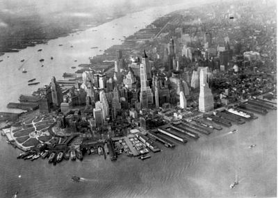

| Uvod |
Geografija |
Istorija |
Izgled |
Demografija |
Autor |
Istorija grada
17. vek
Na južnom kraju otoka Menhetn, 1615. je Holandska istočnoindijska kompanija osnovala svoju kolonijalnu stanicu. Trgovina krznima s Indijancima pokazala
se unosnom, pa je 1621. utemeljena Holandska zapadnoindijska kompanija. 1625. je naselje dobilo ime Novi Amsterdam i postalo glavni grad Nove Holandije.
18. vek
Godine 1776. za vreme američkog rata za nezavisnost u gradu se kratko vreme nalazio štab Džordž Vašingtona.
Kasnije su ga zauzeli Britanci, pod čijom je vlašću bio sve do 1783. i britanskog priznanja američke nezavisnosti.
19. vek
Početkom 19. veka grad sve brže raste, tako da 1811. gradski urbanisti odlučuju celi Manhattan prekriti mrežom ulica.
Jedini je izuzetak bio i ostao Broadway. Prekretnica u istoriji grada bila je izgradnja kanala Erie 1825.
20. vek
U prvoj polovini 20. veka grad je postao svetska industrijska i trgovačka sredina. Svetska kriza tridesetih je teško pogodila Njujork,
a nesposobna gradska uprava pod vodstvom gradonačelnika Džimi Valkera nije se mogla nositi s problemima.
21. vek
U leto 2001. Njujork je doživeo svoj najcrnji dan: najviši gradski neboderi, blizanci World Trade Centera srušeni su u terorističkim napadima 11.9.2001. Na
mestu srušenih nebodera predviđena je izgradnja "Tornja slobode" koji će ujediniti poslovne funkcije sa spomenikom za oko 2800 poginulih ljudi.
Manhattan 1942. godine:
